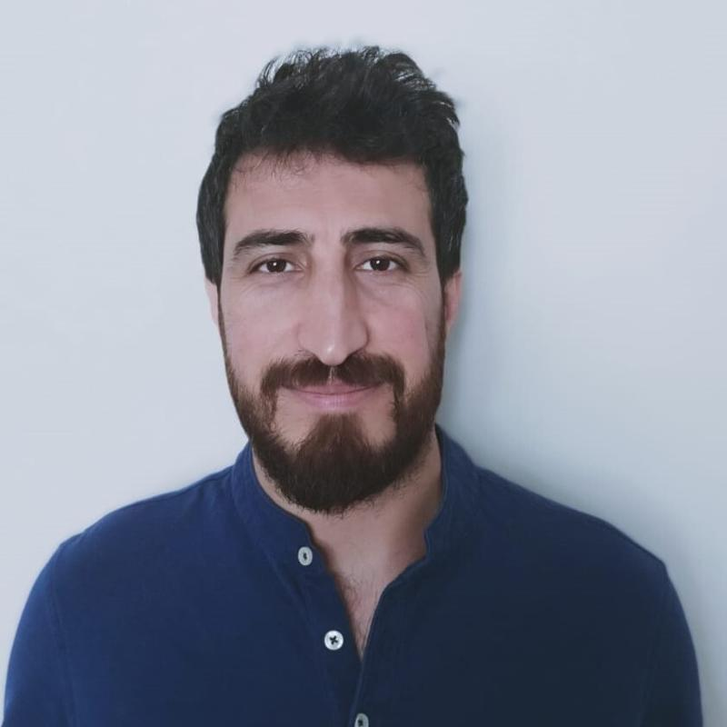

PhD Researcher in History & Civilization
European University Institute, Florence, Italy
yunus.dogan@eui.eu
·
Curriculum Vitae
·
PhD Portfolio
I am a PhD researcher in the Department of History and Civilization at the European University Institute (Florence), where I am completing my dissertation under the supervision of Prof. Giancarlo Casale and Prof. M'hamed Oualdi (prospective defence: June 2026).
My research examines the Moriscos—converted Muslims expelled from early modern Spain—and their subsequent integration into the Ottoman world. It explores how Moriscos deployed strategies of mobility, conversion, intelligence gathering, and cultural brokerage to navigate the intertwined political and confessional landscapes of Europe and the Ottoman Empire in the early modern Mediterranean (c. 1520–1620). By foregrounding the agency of these displaced actors, the project contributes to Mediterranean history by conceptualizing the region as a dynamic and interdependent arena of negotiation that connected Europe, Africa, and Asia through networks of people, information, and exchange.
My research draws on archival sources in Ottoman Turkish, Spanish, Italian, and Latin held in Istanbul, Venice, Madrid, Mantua, and Dubrovnik, among others. I am also interested in digital methods for historical research, including historical network analysis, handwritten text recognition, and geospatial analysis.
Under review